PPF S143 (Entry) valuations¶
This article covers the additional functionality available to create a PPF S143 (Entry) Valuation in SuperVal for the Deferreds Module. It also discusses how the existing PPF S179 (Levy) Valuation functionality can be adapted to run a PPF S143 (Entry) Valuation within the Pensioner Module.
SuperVal runs a PPF S143 (Entry) valuation in the Deferreds Module only. You can define the relevant PPF assumptions within SuperVal, which will then override the assumptions set up for ongoing runs. This will let you use the set-up for the ongoing runs to carry out PPF runs, without having to recreate new basis files.
As much of the setup for PPF S143 (Entry) valuation is similar to PPF S179 (Levy) valuation, the user should consider reading these articles in conjunction.
This article has been updated to reflect the assumptions documented in version B8 of the PPF’s S143 guidance.
Note that B8 changes are effective from 13 June 2018. To use these new yields for S143 valuations between 13 June 2018 and 1 November 2018, use the Secondary Key (e.g. a secondary key of S143) and Adjustment Columns on the PPF yields page.
Version
This article is based on V9.25 of SuperVal. Any screenshots from earlier versions are not materially different.
The following points are relevant for the general setup of SuperVal.
- There are no special member-data requirements for PPF valuations.
- When selecting the Scheme Folders, check PPF Calculations Required on the Data tab to enable the PPF parameters within the basis files.
Defining PPF assumptions and recording yields¶
Follow exactly the same setup process as set out in PPF S179 (Levy) Valuation with the addition of the S143 Cap Increase %. For completeness this is set out below.
Firstly, ensure that the PPF Yields, Caps and Mortality and Spouse's override parameters are up to date and contain the relevant yields and cap data for the valuation date.
This can be done by selecting Tables>PPF from the main menu.
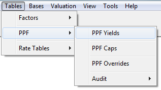
Define each of the PPF Yields, PPF Caps and PPF
Overrides. You can create multiple copies of the PPF Overrides but
only one set of Yields or Caps. These will be saved in the SVPPFFILE.SF
file in the Library Folder.
Each of these screens is discussed below.
PPF Yields screen¶
To add or amend data use the Add Row(s) or Edit Row buttons at the bottom of the page.
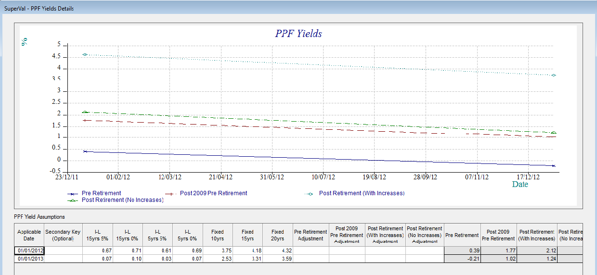
- SuperVal expects bi-annual yields.
- These bi-annual yields are converted to annualised yields
- SuperVal uses the Yield date to establish which relevant assumptions guidance should be used and applies the prescribed method to calculate the assumptions used in the S179 valuation
Additional functionality¶
The Secondary Key introduces the ability to have two different sets of yields defined at the same date. Attach a Secondary Key to a set of yields by typing in a value in the relevant column, e.g. 1, 2, 3. This can be a numeric value or a character string.
When selecting the yields in the Scheme PPF tab, choose
which set of yields to select. E.g. 01/01/2014 1, 01/01/2014 2,
etc.
SuperVal also lets you specify an adjustment to each of the
calculated interest rates for PPF valuations. The adjustment made is
additive e.g. if the calculated yield is 3.25% and 0.25 is entered, the
revised yield will be 3.50%.
Non-revaluing pensions¶
SuperVal makes no allowance for the non-revaluing pre-retirement yield as this only applies if all benefits for all members are non-revaluing. If you need this functionality, then the revaluing pre-retirement yield can be manipulated.
PPF Cap screen¶
To add or amend data use the Add Row or Edit Row button at the bottom of the page.
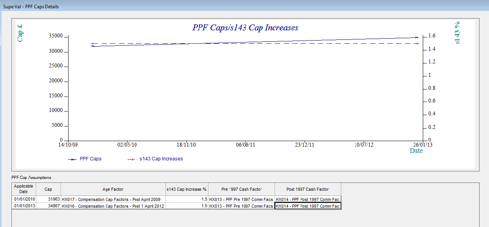
- Compensation Cap
-
Enter the amount of the Compensation Cap applicable at age 65 as at the Applicable Date. Please note that SuperVal will apply 90% to the results for members below Normal Retirement Age after comparing with the Compensation Cap. Enter the full amount here (e.g. £39,006.18 as at 1&nsp;April 2018 at age 65).
- Age Factor
-
The Compensation Cap entered is that applicable to benefits payable at age 65. For benefits payable at ages other than 65, the Compensation Cap needs to be multiplied by either a reduction or increase factor for ages below or above age 65 respectively. The PPF have prescribed these factors and they are published on their website. Double-click to select the table that contains the relevant reduction factor table to apply. The table will have been previously entered into the Decrement File.
- S143 Cap Increase %
-
Enter the rate at which the Compensation Cap will increase in excess of inflation in the future for non-pensioners as set out in the guidance issued by the PPF. This currently is 1.5% (Version H6). Enter the rate of increase in excess of inflation here.
- Pre 1997 and Post 1997 Cash Factor (for retirement Cash on Top benefits only)
-
The PPF has prescribed factors for converting Pre 1997 and Post 1997 lump sums into Pensions. The published rates need to be converted into commutation factors to be input into SuperVal. The factors entered will be used to convert any retirement Cash on Top benefit to pension equivalents. This amount plus the member's retirement pension will then be compared with the Compensation Cap and the result will then be multiplied by 90% if below Normal Pensionable Age.
Override screen¶
Firstly, select the Parameter File containing the Overrides you wish to edit. Different Parameter Files can be used to contain different sets of Overrides. To enter a new set of Overrides use the Default button. This will open the PPF Overrides Details screens.
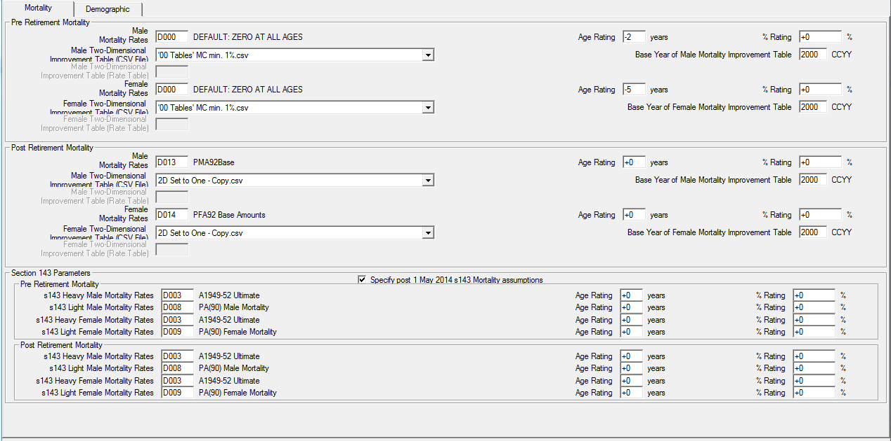
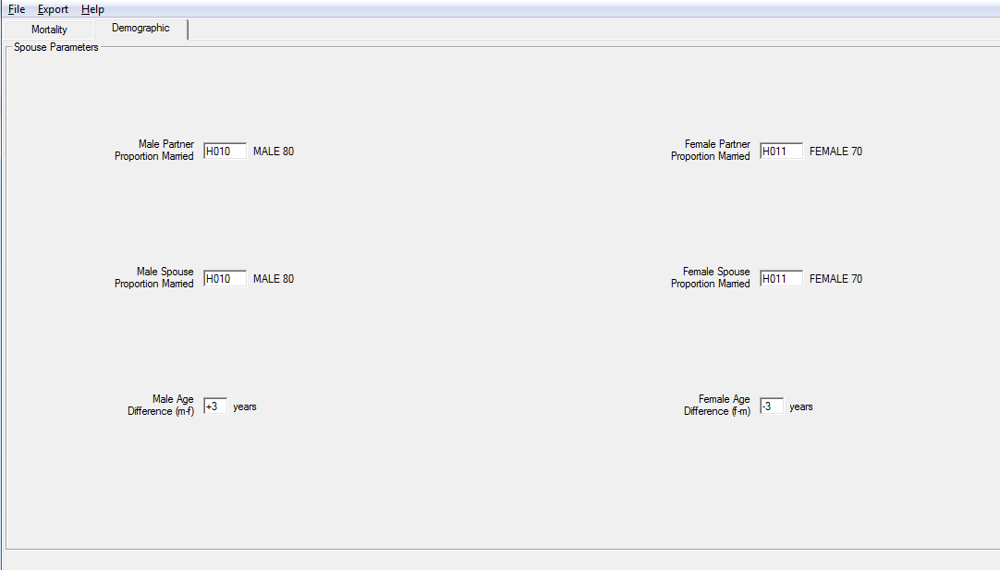
For S143 assumptions, we have a tick box so that the mortality for the
different bands can be specified. Specify the relevant mortality and
mortality improvement tables (Pre- and Post-retirement), the proportion
married for spouses and partners and the age difference here. The
assumptions will be chosen from a list of all of those available in the
Decrement File. Next to each table the description of the table is
shown. Use the % Rating field to specify a scalar
adjustment to the table entered. For a 90% adjustment enter -10. For all
other valuations the user should ensure this is set to 100% by using an
adjustment of 0.
Setting up scheme PPF information¶
To add Scheme-level information select Bases>Scheme>PPF from the main menu.
Within this screen choose the yields, caps and override parameters to use in this Scheme Folder.
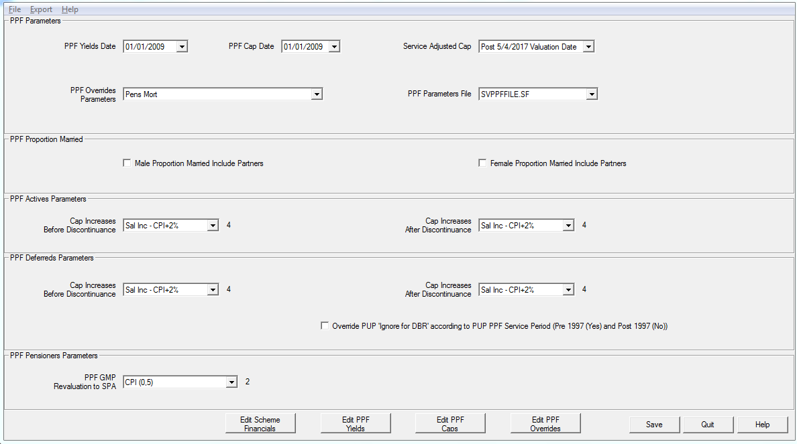
The Yields and Compensation Cap to be used will be taken from the information entered in the PPF parameters referenced by the date shown here. Where two sets of yields are defined for the same date use the Secondary Key to identify which yields to use.
Select the PPF Override Parameter Set that contains the appropriate spouse’s and mortality overrides.
- Proportion Married
-
Use the check box to determine whether to use the assumptions entered in the Overrides for Partner Proportion Married or Spouse’s Proportion Married. Note that the proportion married will apply at the PPF NRA. Allowance for the survivorship of the spouse will be made thereafter.
- Cap Increases Before/After Discontinuance (Deferreds)
-
These fields are not used for PPF S143 (Entry) valuations.
PPF Mortality Adjustments - Member’s Age Ratings¶
SuperVal will automatically take up the relevant mortality table according to each individual’s total pension size (as set out in guidance note B6 to B8). Where included, a Cash on Top lump sum will be converted to pension and included in the comparison. The mortality table to apply is as follows (and is applied to both the base mortality table and the mortality improvement table in SuperVal):
| Pension Size % of Compensation cap at age 65 |
Mortality Table | |||
|---|---|---|---|---|
| Pre 1 May 2014 | Post 1 May 2014 | |||
| Males/Females | Males | Females | First Life | Contingent Life |
| <25% | < 10% | < 5% | Heavy | Heavy |
| 25%–50% | 10%–50% | 5%–20% | Medium | Medium |
| > 50% | > 50% | > 20% | Light | Light |
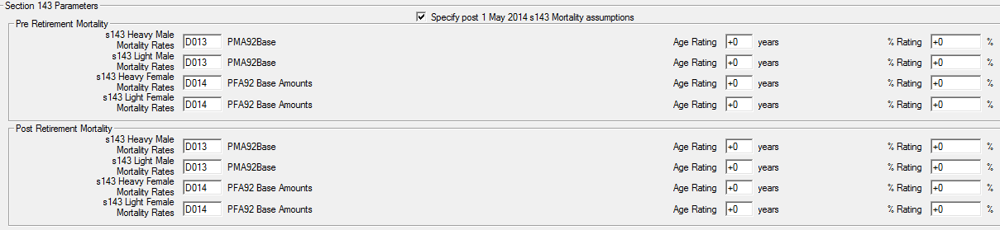
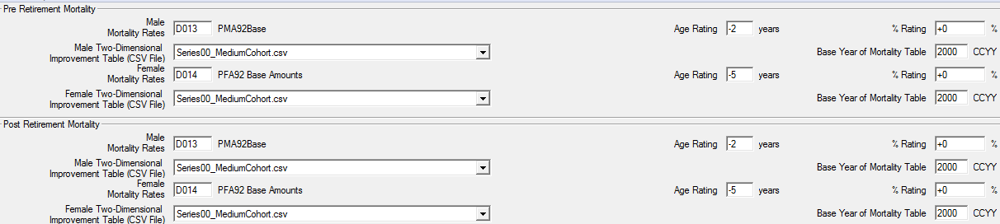
Setting up Deferred basis files for PPF Runs¶
For a PPF S143 (Entry) valuation, all non-pensioners will need to be valued in the Deferreds module in SuperVal. (There is no functionality to run a PPF S143 (Entry) valuations in the Actives module.)
The set-up for basis files is identical to that used for S179 valuations.
Select a basis file using Bases>Group>Deferreds.
PPF/CAP tab¶
Select the scheme PPF information by clicking on the Edit Scheme PPF on the PPF/CAP tab.
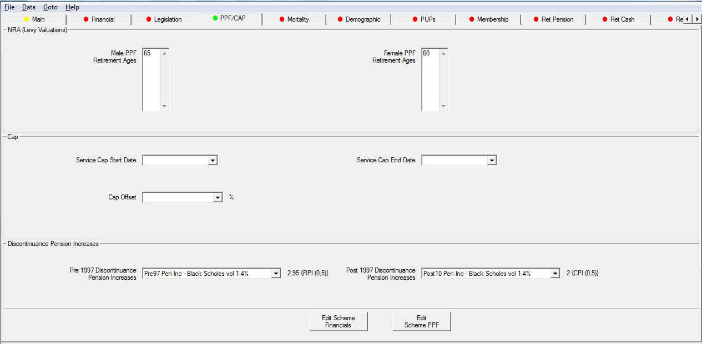
On this screen the following information can be added:
- PPF Male and Female Retirement Ages
-
You can specify up to four Normal Retirement Ages for males and females separately. Please note that these will also be used in any PPF Section 179 (Levy) valuation run in the same scheme folders.
- Cap Offset %
-
If a deferred member, who has not yet reached PPF Normal Retirement Age, is already receiving a retirement pension from this or another scheme, then the Compensation Cap at retirement can be reduced to reflect this. Select the data item containing the percentage of the Compensation Cap already used. SuperVal will then take account of this when determining any restriction in benefits due to the Compensation Cap at future retirement ages.
- Pre 97 and Post 97 Discontinuance pension increases
-
These fields are not used for PPF S143 (Entry) valuations. They are only used in the non-PPF capped runs however the relevance rules will require the user to enter a relevant parameter for this variable before proceeding.
PPF inputs on PUPs Tab¶

- PPF NRA (Levy Valuations)
-
Select the PPF Normal Retirement Age for each PUP from the list previously defined on the PPF/CAP tab.
- PPF Service Period
-
Specify whether a particular slice of benefit is in respect of Pre 97, 97 to 09, or Post 09 service and it will be valued accordingly for PPF purposes.
Other issues¶
GMP calculations¶
The Treat GMP as Zero checkbox will default to being ticked and all GMP benefits are ignored when running a PPF S143 (Entry) valuation.
Non-standard PUPs and independent PUPs¶
IndPUPs are included in PPF runs. For members below NRA the benefit will be adjusted by 90%. Independent PUPs will not be restricted by the Compensation Cap.
NSPUPs remain excluded.
Which adjustment factors are applied?¶
The PUP adjustment factors on the PUPs screen are included. These are applied before the benefit is compared with the Compensation Cap
Cash on Top¶
Where Cash-on-Top benefits are provided all options except for % of pension are valued. These will be converted to an equivalent pension amount using the Pre 1997 and Post 1997 Cash Factors entered on the PPF Caps tab in the PPF Parameters. These will then be added to the Total Accrued Pension when applying the Compensation Cap.
SuperVal will split the liability for Cash on Top into Pre 97, 97 to 09 and Post 09.
SuperVal will ignore any retirement cash provided through commutation of pension.
Setting up Pensioners basis files for PPF runs¶
There is no specific functionality to run a PPF S143 (Entry) valuation in the Pensioners module. However, there is no difference in the treatment of Pensioners between a PPF S143 (Entry) valuation and a PPF S179 (Levy) valuation except for the mortality assumptions used for the different bands of pension. As a result, a pensioners PPF S143 (Entry) valuation can be run through the PPF S179 (Levy) valuation functionality after setting up new sets of PPF Overrides.
To reflect the different mortality assumptions, depending on the size of the member’s pension, split the pensioners valuation data into different categories. The categories within the data should reflect the age rating that applies to the mortality assumption.
PPF S179 (Levy) Valuation for more on how to set up.
Expenses¶
SuperVal does not make any allowance for expenses in the PPF S143 (Entry) Valuations.
Application of capping and reduction factors¶
Retirement benefits¶
For S143 (Entry) valuations, SuperVal will reduce retirement benefits using the same methodology as is used for a S179 (Levy) valuations, except that the Compensation Cap at the relevant Normal Retirement Age will be increased in line with ‘S143 Cap Increase %’ assumption between Valuation Date and Normal Retirement Age. The following examples provide more details.
Example 1
Member has just one NRA for all benefits and has not yet reached this.
Valuation Date 01/01/2013
Member’s Age at Valuation Date 60
Deferred Pension revalued to Valuation Date £20,000 pa
Normal Retirement Age for all benefits 65
Compensation Cap at age 65 at Valuation Date £34,050 pa
(Cap at 1 April 2012)
- Projected Compensation Cap at age 65
-
= 34,050 × 1.0155
= £36,682
Projected Benefit at age 65 is
= 90% × min[£20,000, £36,682]
= £18,000 p.a.
The member won’t be subject to the Compensation Cap at retirement and only the 90% reduction factor applied.
Strictly speaking, when calculating the projected Compensation Cap in relation to any Post-09 benefits, an adjustment should be made based on the geometric difference between the assumed yields in deferment for Pre-09 and Post-09 benefits. Version 9.25 of SuperVal does not currently make this adjustment.
Example 2
Member has just one NRA for all benefits and he has not yet reached this.
The member’s revalued pension at Valuation Date is above the Compensation Cap.
Valuation Date 01/01/2013
Member’s Age at Valuation Date 60
Deferred Pension revalued to Valuation Date £40,000 pa
Normal Retirement Age for all benefits 65
Compensation Cap at age 65 at Valuation Date £34,050 pa
(Cap at 1 April 2012)
- Projected Compensation Cap at age 65
-
= 34,050 × 1.0155
= £36,682
Projected Benefit at age 65 is
= 90% × min[£40,000, £36,682]
= £33,014 pa
The member’s benefits will be subject to the Compensation Cap at retirement.
Example 3
Member has benefits payable from two different NRAs and he has not yet reached either.
Valuation Date 01/01/2013
Member’s Age at Valuation Date 55
Deferred Pension revalued to Valuation Date £10,000 pa – Pen1
£15,000 pa – Pen2
Normal Retirement Age for all benefits 60 – NRA 1
65 – NRA 2
Compensation Cap at age 60 at Valuation Date £29,867 pa
Compensation Cap at age 65 at Valuation Date £34,050 pa
(Cap at 1 April 2012)
- The Projected Compensation Cap at age 60
-
= 29,867 × 1.0155
= £32,175 - The Projected Compensation Cap at age 65
-
= 34,050 × 1.01510
= £39,516
Projected NRA 1 Benefit at age 60
= 90% × min[10,000, 32,175]
= £9,000 p.a.
Comp Cap % used at NRA 1
= 10,000 ÷ 32,175
= 31.08%
As this is less than 100% the member’s benefit is not capped at age 60.
Projected NRA 2 benefit at age 65
= 90% × min[15,000, 39,516]
= £13,500 pa
Comp Cap % used at NRA 2
= 31.08% + 15,000 ÷ 39,516
= 69.04%
As this is still less than 100%, the member’s benefit is not capped at age 65.
The NRA 1 benefit continues to be paid from age 65. (It may have had increases in payment between 60 and 65). In addition, NPA 2 benefit of £13,500 is payable from age 65.
Example 4
Member has benefits payable from two different NRAs and he has not yet reached either.
Valuation Date 01/01/2013
Member’s Age at Valuation Date 55
Deferred Pension revalued to Valuation Date £50,000 pa – Pen1
£15,000 pa – Pen2
Normal Retirement Age for all benefits 60 – NRA 1
65 – NRA 2
Compensation Cap at age 60 at Valuation Date £29,867 pa
Compensation Cap at age 65 at Valuation Date £34,050 pa
(Cap at 1 April 2012)
- The Projected Compensation Cap at age 60
-
= 29,867 × 1.0155
= £32,175
Projected Benefit at age 60
= 90% × min[50,000, 32,175]
= £28,958 pa
In this case SuperVal will only value the Capped NRA 60 benefits and not value any of the NRA 65 benefits (post-retirement).
Strictly speaking, if there is a split of pre/post 97 pension (either in relation to the NPA60, NPA65 or both NPAs), there should be a reallocation of pension at 65. (See PPF document Additional information for carrying out a Section 143 valuation.) SuperVal currently does not carry out this reallocation of benefits, (and hence the proportion of Pre/Post 97 pension may need to be adjusted outside of SuperVal to amend benefits from the higher NPA).
Example 5
Member has benefits payable from two different NRAs and he has not yet reached either.
Valuation Date 01/01/2013
Member’s Age at Valuation Date 55
Deferred Pension revalued to Valuation Date £25,000 pa – Pen1
£25,000 pa – Pen2
Normal Retirement Age for all benefits 60 – NRA 1
65 – NRA 2
Compensation Cap at age 60 at Valuation Date £29,867 pa
Compensation Cap at age 65 at Valuation Date £34,050 pa
(Cap at 1 April 2012)
- The Projected Compensation Cap at age 60
-
= 29,867 × 1.0155
= £32,175 - The Projected Compensation Cap at age 65
-
= 34,050 × 1.01510
= £39,516
Projected NRA 1 Benefit at age 60
= 90% × min[25,000, 32,175]
= £22,500 pa
Comp Cap % used at NRA 1
= 25,000 ÷ 32,175
= 77.70%
As this is less than 100%, the member’s benefit is not Capped at age 60.
A pension of £22,500 will be paid between ages 60 and 65 (with any relevant increases due).
Projected NRA 2 benefit at age 65
= 90% x min[25,000, 39,516]
= £22,500 pa
Comp Cap % used at NRA 2
= 77.70% + 25,000 ÷ 39,516
= 140.97%
As this is greater than 100%, the member’s benefits will be capped at age 65 and a reduction factor will be applied to the benefit. The total benefits will be reduced by a factor of \(\frac{1}{1.4097} = 70.94\%\) from age 65.
SuperVal will reduce both the NRA 60 and NRA 65 benefits by a factor of 0.7094 from age 65 onwards. Strictly speaking, if there is a split of Pre/Post 97 pension (either in related to the NRA 60, NRA 65 or both NPAs), there should be a reallocation of pension at 65. (See PPF document Additional information for carrying out a Section 143 valuation.) SuperVal currently does not carry out this reallocation of benefits (and hence the proportion of Pre/Post 97 pension may need to be adjusted outside of SuperVal to amend benefits from the higher NPA).
Example 6: Members over NRA at the valuation date
If a member has any benefits with an NRA lower than their current age, then SuperVal will value the benefit from their current age ignoring the 90% adjustment.
For example, a member aged 63 has two benefits, one with NRA 60, the other with NRA 65.
The NRA 60 benefit will be valued from age 63, ignoring the cap and without adjustment (and no adjustment for late retirement).
The NRA 65 benefit will be valued from age 65, with a 90% adjustment. Note, when determining whether the benefit will be Capped at age 65, the NRA 60 benefit is ignored.
Death-in-deferment Benefits¶
SuperVal will cap death-in-deferment benefits in exactly the same way as it does for S179 valuations. Details are set out below.
Death-in-Deferment Lump Sums are ignored i.e. not included in the liability.
A comparison with the Compensation Cap will only be made for the spouse’s benefit where this is defined as percentage of the member’s pension. The percentage override will be set to 50%.
The formula for the Reduction Factor uses the same methodology as for Retirement benefits but uses the Compensation Cap at VDATE for the member’s age last adjusted for the relevant Death in Deferment percentage.
Running a PPF S143 valuation¶
When setting up a batch run for a S143 valuation, follow the same methodology as for a PPF S179 (Levy) valuation i.e. select the Deferred Pension Protection Fund as the valuation method. Then select the Scheme Basis Files that you wish to run and whether you wish to include Males and Females. Then ensure the S143 Entry Valuation check box within the Batch Parameters tab is ticked.
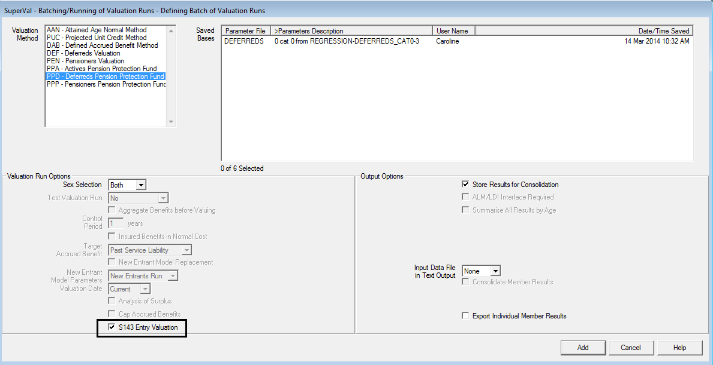
Click Add to add the Batch run and then select either Unattended Run or an (attended) Run.
Changes to PPF assumptions¶
SuperVal V9.25 allows fully for the changes in the financial and demographic assumptions for PPF S179 (Levy) valuations ie those specified in guidance notes A4, A5, A6, A7, A8 and A9.
SuperVal assumes all pensions defined are revaluing. As noted earlier, the yields can be manipulated to allow for non-revaluing pensions if required. However, for pensioners, you are able to define a PPF Revaluation in Deferment for each pension defined.
Note the relevant yield data needs to be input at Valuation Date and SuperVal will use the different formulae to determine the correct yields.
Output from PPF S143 runs¶
Excel results output¶
Excel output is available for the deferreds module. The output filename is:
Deferreds PPD (S143) using <basis filename> at <vdate>.xls
The results will appear as follows:
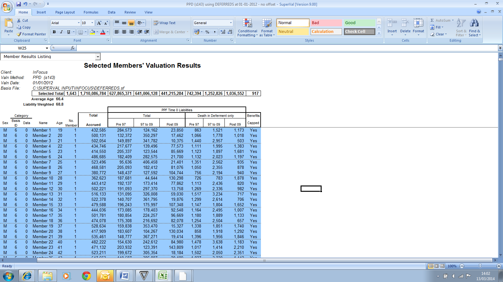
Note that the liabilities are also shown separately for death-in
deferment-benefits. Any member who is affected by the Compensation Cap
has a Yes in the column Benefit Capped.
Varprint / Accprint¶
Note that the single-life test files VARPRINT and ACCPRINT are not available for PPF runs.
Consolidation¶
Consolidation is carried out as for other funding methods. Under
Valuation Methods select PP3 - Pension Protection Fund Entry.
You can define the name of each consolidation run. Each run will result in an Excel file and a database file.